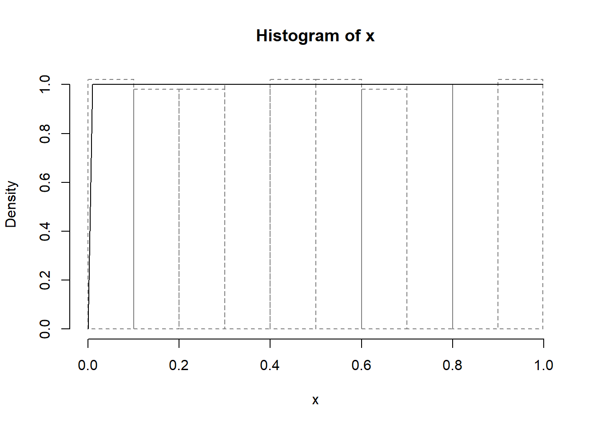
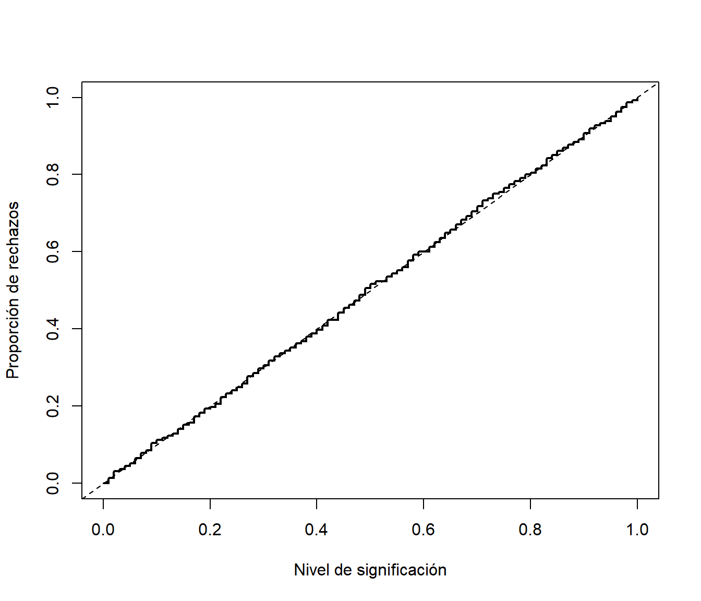
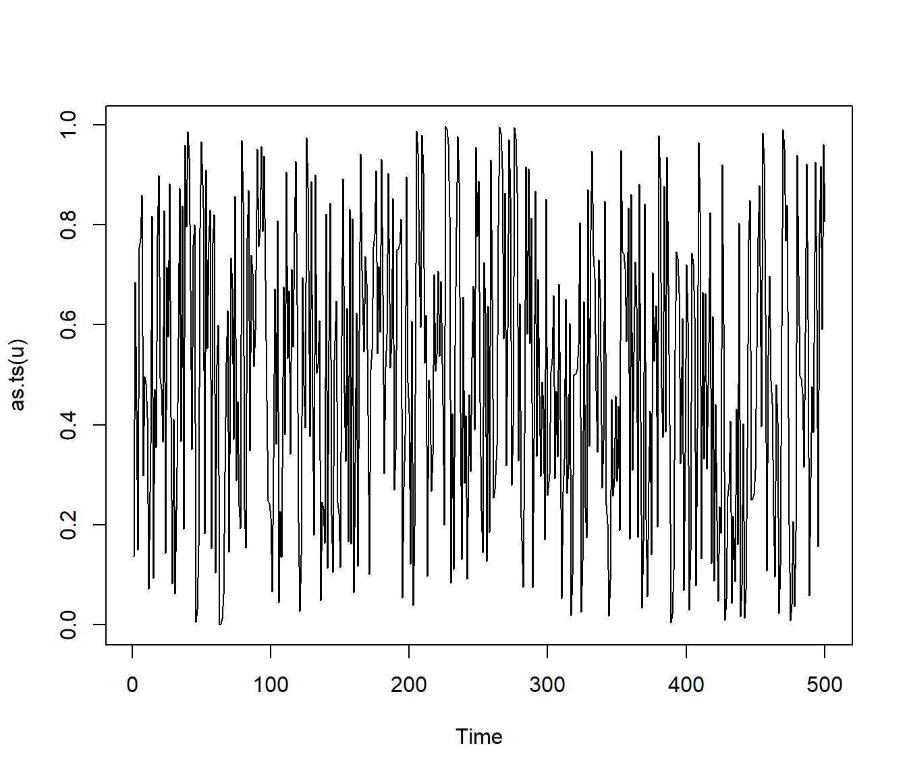
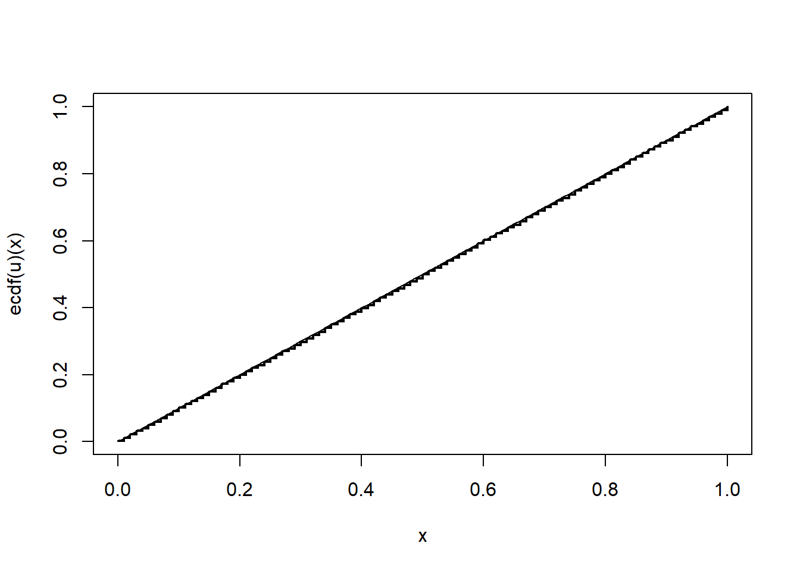
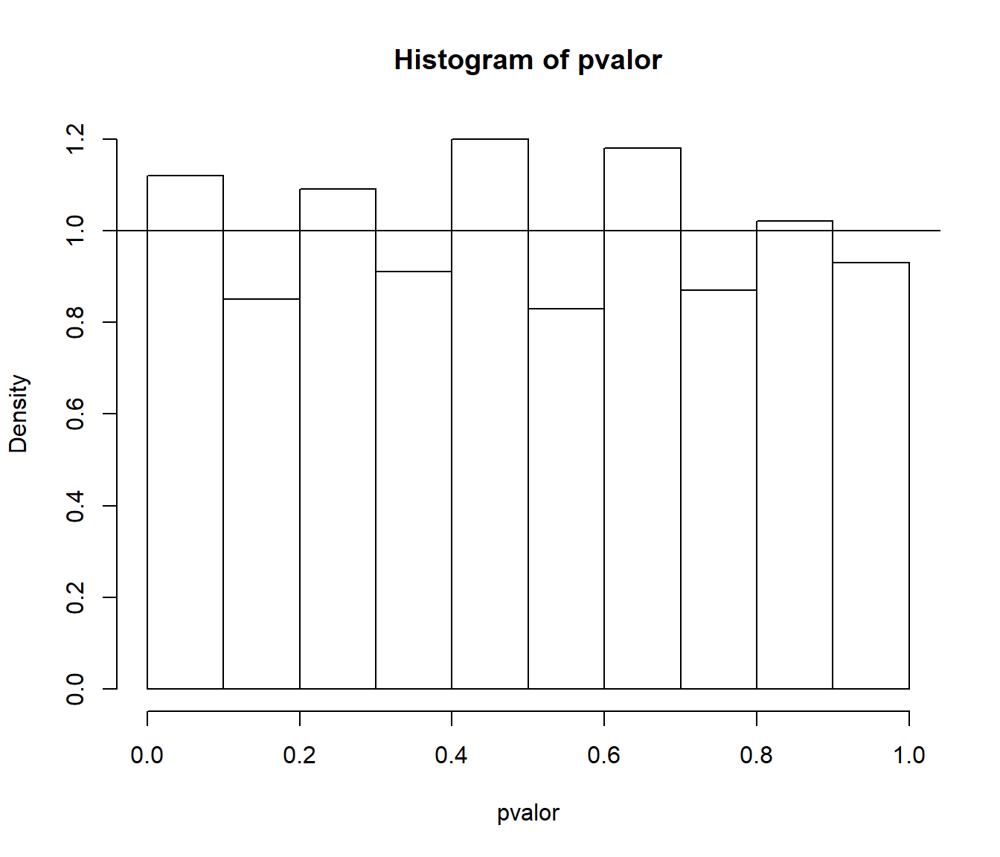

3.2 Análisis de la calidad de un generador
Para verificar si un generador tiene las propiedades estadísticas deseadas hay disponibles una gran cantidad de test de hipótesis (baterías de contrastes) y métodos gráficos:
Contrastes genéricos de bondad de ajuste y aleatoriedad.
Contrastes específicos para generadores aleatorios.
Se trata principalmente de contrastar si las muestras generadas son i.i.d. \(\mathcal{U}\left(0,1\right)\) (análisis univariante). Aunque los métodos más avanzados tratan normalmente de contrastar si las \(k\)-uplas:
\[(U_{t+1},U_{t+2},...,U_{t+k-1}); \ t=(i-1)k, \ i=1,...,m\]
son i.i.d. \(\mathcal{U}\left(0,1\right)^{k}\) (uniformes independientes en el hipercubo; análisis multivariante).
Nos centraremos en los métodos genéricos. Pueden usarse en:
Evaluación de generadores aleatorios
Evaluación de generadores de variables aleatorias
Modelado de entradas de modelos de simulación
Uno de los contrastes más conocidos es el test ji-cuadrado de bondad de ajuste (chisq.test para el caso discreto). Aunque si la variable de interés es continua, habría que discretizarla (con la correspondiente perdida de información). Por ejemplo, se podría emplear la siguiente función (que imita a las incluídas en R):
#-------------------------------------------------------------------------------
# chisq.test.cont(x, distribution, nclasses, output, nestpar,...)
#-------------------------------------------------------------------------------
# Realiza el test ji-cuadrado de bondad de ajuste para una distribución continua
# discretizando en intervalos equiprobables.
# Parámetros:
# distribution = "norm","unif",etc
# nclasses = floor(length(x)/5)
# output = TRUE
# nestpar = 0= nº de parámetros estimados
# ... = parámetros distribución
# Ejemplo:
# chisq.test.cont(x, distribution="norm", nestpar=2, mean=mean(x), sd=sqrt((nx-1)/nx)*sd(x))
#-------------------------------------------------------------------------------
chisq.test.cont <- function(x, distribution = "norm", nclasses = floor(length(x)/5),
output = TRUE, nestpar = 0, ...) {
# Funciones distribución
q.distrib <- eval(parse(text = paste("q", distribution, sep = "")))
d.distrib <- eval(parse(text = paste("d", distribution, sep = "")))
# Puntos de corte
q <- q.distrib((1:(nclasses - 1))/nclasses, ...)
tol <- sqrt(.Machine$double.eps)
xbreaks <- c(min(x) - tol, q, max(x) + tol)
# Gráficos y frecuencias
if (output) {
xhist <- hist(x, breaks = xbreaks, freq = FALSE, lty = 2, border = "grey50")
curve(d.distrib(x, ...), add = TRUE)
} else {
xhist <- hist(x, breaks = xbreaks, plot = FALSE)
}
# Cálculo estadístico y p-valor
O <- xhist$counts # Equivalente a table(cut(x, xbreaks)) pero más eficiente
E <- length(x)/nclasses
DNAME <- deparse(substitute(x))
METHOD <- "Pearson's Chi-squared test"
STATISTIC <- sum((O - E)^2/E)
names(STATISTIC) <- "X-squared"
PARAMETER <- nclasses - nestpar - 1
names(PARAMETER) <- "df"
PVAL <- pchisq(STATISTIC, PARAMETER, lower.tail = FALSE)
# Preparar resultados
classes <- format(xbreaks)
classes <- paste("(", classes[-(nclasses + 1)], ",", classes[-1], "]",
sep = "")
RESULTS <- list(classes = classes, observed = O, expected = E, residuals = (O -
E)/sqrt(E))
if (output) {
cat("\nPearson's Chi-squared test table\n")
print(as.data.frame(RESULTS))
}
if (any(E < 5))
warning("Chi-squared approximation may be incorrect")
structure(c(list(statistic = STATISTIC, parameter = PARAMETER, p.value = PVAL,
method = METHOD, data.name = DNAME), RESULTS), class = "htest")
}Por ejemplo, continuando con el generador congruencial anterior, obtendríamos:
chisq.test.cont(u, distribution = "unif",
nclasses = 10, nestpar = 0, min = 0, max = 1)
##
## Pearson's Chi-squared test table
## classes observed expected residuals
## 1 (-1.490116e-08, 1.000000e-01] 51 50 0.1414214
## 2 ( 1.000000e-01, 2.000000e-01] 49 50 -0.1414214
## 3 ( 2.000000e-01, 3.000000e-01] 49 50 -0.1414214
## 4 ( 3.000000e-01, 4.000000e-01] 50 50 0.0000000
## 5 ( 4.000000e-01, 5.000000e-01] 51 50 0.1414214
## 6 ( 5.000000e-01, 6.000000e-01] 51 50 0.1414214
## 7 ( 6.000000e-01, 7.000000e-01] 49 50 -0.1414214
## 8 ( 7.000000e-01, 8.000000e-01] 50 50 0.0000000
## 9 ( 8.000000e-01, 9.000000e-01] 50 50 0.0000000
## 10 ( 9.000000e-01, 9.980469e-01] 50 50 0.0000000##
## Pearson's Chi-squared test
##
## data: u
## X-squared = 0.12, df = 9, p-value = 1Importante:
Empleando los métodos genéricos del modo habitual, desconfiamos del generador si la muestra/secuencia no se ajusta a la distribución teórica (p-valor \(\leq \alpha\)). En este caso además, también se sospecha si se ajusta demasiado bien a la distribución teórica (p-valor \(\geq1-\alpha\)).
Otro contraste de bondad de ajuste muy conocido es el test de Kolmogorov-Smirnov, implementado en ks.test.
Continuando con el generador congruencial anterior:
initRANDC(321, 5, 1, 512) # Fijar semilla para reproductibilidad
nsim <- 500
system.time(u <- RANDCN(nsim)) # GenerarRealizar el contraste de Kolmogorov-Smirnov para estudiar el ajuste a una \(\mathcal{U}(0,1)\).
# Distribución empírica curve(ecdf(u)(x), type = "s", lwd = 2) curve(punif(x, 0, 1), add = TRUE)
# Test de Kolmogorov-Smirnov ks.test(u, "punif", 0, 1)## ## One-sample Kolmogorov-Smirnov test ## ## data: u ## D = 0.0033281, p-value = 1 ## alternative hypothesis: two-sidedObtener el gráfico secuencial y el de dispersión retardado, ¿se observa algún problema?
Gráfico secuencial:
plot(as.ts(u))
Gráfico de dispersión retardado:
plot(u[-nsim],u[-1])
Estudiar las correlaciones del vector \((u_{i},u_{i+k})\), con \(k=1,...,10\). Contrastar si son nulas.
Correlaciones:
acf(u)
Test de Ljung-Box:
Box.test(u, lag = 10, type = "Ljung")## ## Box-Ljung test ## ## data: u ## X-squared = 22.533, df = 10, p-value = 0.01261
3.2.1 Repetición de contrastes
Los contrastes se plantean habitualmente desde el punto de vista de la inferencia estadística en la práctica: se realiza una prueba sobre la única muestra disponible. Si se realiza una única prueba, en las condiciones de \(H_{0}\) hay una probabilidad \(\alpha\) de rechazarla. En simulación tiene mucho más sentido realizar un gran número de pruebas:
La proporción de rechazos debería aproximarse al valor de \(\alpha\)(se puede comprobar para distintos valores de \(\alpha\)).
La distribución del estadístico debería ajustarse a la teórica bajo \(H_{0}\)(se podría realizar un nuevo contraste de bondad de ajuste).
Los p-valores obtenidos deberían ajustarse a una \(\mathcal{U}\left(0,1\right)\) (se podría realizar también un contraste de bondad de ajuste).
Este procedimiento es también el habitual para validar un método de contraste de hipótesis por simulación.
Consideramos el generador congruencial RANDU:
# Valores iniciales
initRANDC(543210) # Fijar semilla para reproductibilidad
# set.seed(543210)
n <- 500
nsim <- 1000
estadistico <- numeric(nsim)
pvalor <- numeric(nsim)
# Realizar contrastes
for(isim in 1:nsim) {
u <- RANDCN(n) # Generar
# u <- runif(n)
tmp <- chisq.test.cont(u, distribution="unif",
nclasses=100, output=FALSE, nestpar=0, min=0, max=1)
estadistico[isim] <- tmp$statistic
pvalor[isim] <- tmp$p.value
}Proporción de rechazos:
# cat("\nProporción de rechazos al 1% =", sum(pvalor < 0.01)/nsim, "\n")
cat("\nProporción de rechazos al 1% =", mean(pvalor < 0.01), "\n")##
## Proporción de rechazos al 1% = 0.014# cat("Proporción de rechazos al 5% =", sum(pvalor < 0.05)/nsim, "\n")
cat("Proporción de rechazos al 5% =", mean(pvalor < 0.05), "\n")## Proporción de rechazos al 5% = 0.051# cat("Proporción de rechazos al 10% =", sum(pvalor < 0.1)/nsim, "\n")
cat("Proporción de rechazos al 10% =", mean(pvalor < 0.1), "\n")## Proporción de rechazos al 10% = 0.112Análisis del estadístico contraste:
# Histograma
hist(estadistico, breaks = "FD", freq=FALSE)
curve(dchisq(x,99), add=TRUE)
# Test ji-cuadrado
# chisq.test.cont(estadistico, distribution="chisq", nclasses=20, nestpar=0, df=99)
# Test de Kolmogorov-Smirnov
ks.test(estadistico, "pchisq", df=99)##
## One-sample Kolmogorov-Smirnov test
##
## data: estadistico
## D = 0.023499, p-value = 0.6388
## alternative hypothesis: two-sidedAnálisis de los p-valores:
# Histograma
hist(pvalor, freq=FALSE)
abline(h=1) # curve(dunif(x,0,1), add=TRUE)
# Test ji-cuadrado
# chisq.test.cont(pvalor, distribution="unif", nclasses=20, nestpar=0, min=0, max=1)
# Test de Kolmogorov-Smirnov
ks.test(pvalor, "punif", min=0, max=1)##
## One-sample Kolmogorov-Smirnov test
##
## data: pvalor
## D = 0.023499, p-value = 0.6388
## alternative hypothesis: two-sided3.2.2 Baterías de contrastes
Contrastes específicos para generadores aleatorios:
Diehard tests (The Marsaglia Random Number CDROM): http://www.stat.fsu.edu/pub/diehard.
TestU01: http://www.iro.umontreal.ca/simardr/testu01/tu01.html.
NIST test suite: http://csrc.nist.gov/groups/ST/toolkit/rng.
Dieharder (paquete
RDieHarder): http://www.phy.duke.edu/rgb/General/dieharder.phpEntidad Certificadora (gratuita): CAcert.
Documentación adicional:
Randomness Tests: A Literature Survey http://www.ciphersbyritter.com/RES/RANDTEST.HTM-
Marsaglia, Tsang (2002). Some Difficult-to-pass Tests of Randomness: http://www.jstatsoft.org/v07/i03
http://www.csis.hku.hk/cisc/download/idetect